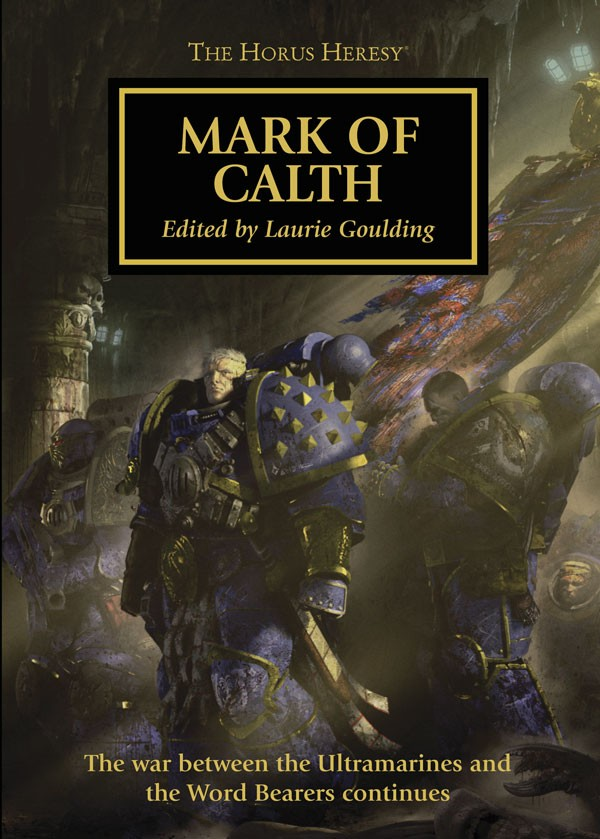

CALTH THAT WAS

Author: Graham McNeill
Format: Novella
The war on Calth continues after the first betrayal. Remus Ventanus and the Ultramarines fight to survive amid the devastated world and confront the Word Bearers still threatening its people.
Listed in: Mark of Calth.
Introduction reviewed against Black Library’s description on 2026-09-27. The publisher page may contain spoilers.
Publication facts: publisher source, checked 2026-09-26. The collection contents remain disputed.
Open this work in the interactive Archive to track reading progress and explore related works.